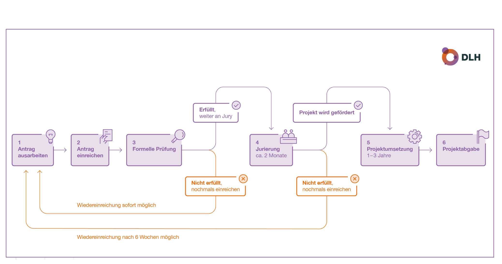

Pro Block links das saubere HTML (nur p, ul, ol, h3, h4, a, strong, br, img – keine Klassen, keine Inline-Styles), rechts die Vorschau. In den JCE-Editor jeweils über die Code-Ansicht einfügen bzw. bei YooTheme-Akkordeons in das Inhaltsfeld des jeweiligen Eintrags. Anfangsbuchstaben D / L / H sind mit <strong> hervorgehoben (robust für JCE). Die Grafik Ablauf-Grafik-neu.png vorher in den Joomla-Medienmanager laden und den src anpassen.
Der DLH-Innovationsfonds unterstützt Lehrpersonen an Berufsfachschulen und Mittelschulen im Kanton Zürich dabei, Unterrichtsideen mit digitaler Unterstützung auszuprobieren, zu optimieren und weiterzuentwickeln. Das können kleine innovative Pilotprojekte sein, grössere Vertiefungsprojekte mit didaktischem Fokus oder Projekte zur nachhaltigen Verbreitung bewährter Innovationen. Die daraus hervorgehenden Produkte und Erkenntnisse werden hier allen Lehrpersonen zur Verfügung gestellt.
Innovation umfasst sowohl:
Entscheidend ist nicht die Grösse eines Projekts, sondern dass neue Erfahrungen entstehen und der Unterricht weiterentwickelt wird.
Der DLH-Innovationsfonds unterstützt Lehrpersonenteams aus mindestens 2 Personen, die an öffentlichen Schulen auf Stufe Sek II des Kantons Zürich angestellt sind. Dies sind alle kantonalen Schulen der Zürcher Sek II und die privat geführten Schulen der Berufsbildung mit kantonalem Leistungsauftrag.
Sehr gerne dürfen die Teams sich auch schul- und fachübergreifend zusammensetzen.
Projekte sollten einen konkreten didaktischen Mehrwert für die Schülerinnen und Schüler sowie Lernenden bieten und im Unterricht erprobt werden. Unsere Jury bewertet die Anträge nach den folgenden Kriterien:
[Kriterientabelle mit drei Projektarten] – in der Vorlage nur als Platzhalter vorhanden, der eigentliche Tabelleninhalt fehlt noch.
Je nach gewählter Projektart werden die Kriterien etwas anders gewichtet (siehe auch Tabelle):
Der Innovationsfonds unterstützt Projekte im Rahmen von 160–800 Arbeitsstunden. Für Digital Explorer-Projekte sind es pauschal 160 Stunden, für Learning Incubator-Projekte 160–800 h, für Hub-Scaler-Projekte 160–400 Stunden.
Zusätzliche Kosten bis maximal CHF 5000, zum Beispiel für Lizenzen, externe Fachberatung oder technische Infrastruktur sind finanzierbar, müssen im Projektantrag jedoch begründet werden.
Für kleinere Projekte empfehlen wir einen Antrag direkt an die Schulleitung.
Grössere Projekte, die den Rahmen von 800 Arbeitsstunden überschreiten, werden als Schulentwicklungsprojekte betrachtet. Hier ist das MBA federführend.
Ein nachträglicher Anspruch auf Finanzierung kann nicht geltend gemacht werden.
Ein Projekt dauert in der Regel maximal drei Jahre und durchläuft folgende Phasen:
Das Projekt gilt als abgeschlossen, wenn die Projektresultate und Erfahrungen aus dem Projekt sowie allfällige Produkte auf der DLH-Webseite allen Lehrpersonen zur Verfügung gestellt sind.

Gute Projektideen entstehen oft direkt im Unterrichtsalltag: aus neuen Herausforderungen, eigenen Beobachtungen oder dem Wunsch, etwas anders auszuprobieren. Hier findet ein Austausch statt:
Häufig werden neue Entwicklungen erst mit etwas Verzögerung im Bildungsbereich sichtbar. Deshalb lohnt es sich – insbesondere bei „Digital Explorer“-Projekten – auch einen Blick auf aktuelle Trends und Entwicklungen ausserhalb der Schule zu werfen:
Nicht jede Projektidee muss von Anfang an vollständig ausgearbeitet sein. Oft entstehen Innovationen erst durch das Ausprobieren im Unterricht oder das gemeinsame Gespräch.
Gerne unterstützen wir Sie bei der Ausarbeitung Ihres Projektantrags im Rahmen unserer Beratungscalls (Termine) oder auf Anfrage per Mail.
Mit der Einreichung erhalten die Projektgruppe und die Schulleitung(en) automatisch eine Eingangsbestätigung.
Anschliessend prüft die Geschäftsstelle des Innovationsfonds, ob die formalen Kriterien erfüllt sind. Falls nicht, nimmt die Geschäftsstelle mit der Projektgruppe Kontakt auf.
Sind die formalen Kriterien erfüllt, wird der Projektantrag an die Jury weitergeleitet.
Die Jury, welche den Entscheid zur Förderung von Projekten fällt, ist breit abgestützt. Sie bewertet die Projekte nach den festgelegten Kriterien (siehe Rahmenbedingungen: „Welche Kriterien gelten für die Förderung?“).
Der DLH informiert die Projektgruppe anschliessend über den Entscheid zur Förderung. (Weitere Auskünfte über den Jury-Entscheid werden nicht erteilt. Der Rechtsweg ist ausgeschlossen.)
Bei einem positiven Entscheid dürfen die Projektteams sofort mit der Umsetzung ihres Projekts beginnen. Diese kann in der Regel über ein bis drei Jahre dauern. Während dieser Zeit werden die Projektgruppen vom DLH begleitet und unterstützt. Dazu gehören Austausch, Beratung sowie punktuelle Rückmeldungen zum Projektverlauf, um den Fortschritt des Projekts festzuhalten und den Einsatz der Fördermittel nachvollziehbar zu dokumentieren.
Bei einem negativen Entscheid kann das Projektteam seinen Projektantrag auf das Juryfeedback hin überarbeiten und nach frühestens sechs Wochen wiedereinreichen.
Der DLH macht in Absprache mit dem jeweiligen Projektteam die Projektresultate und Erfahrungen aus dem Projekt zugänglich. Auch allfällige Produkte werden auf der DLH-Webseite allen Lehrpersonen zur Verfügung gestellt.
Unabhängig von der Projektart können ausgewählte Projektresultate durch den DLH gemeinsam mit Lehrpersonen weiterentwickelt, aufbereitet und für eine breitere Nutzung zugänglich gemacht werden.
Dazu gehören beispielsweise Projektvorstellungen, Workshops, Weiterentwicklungen von Unterrichtsmaterialien oder der Austausch von Erfahrungen und Learnings innerhalb der DLH-Community.
Gerne können Sie Ihre Projektidee vorab in einem unserer Beratungscalls besprechen (Termine).
Für die Einreichung verwenden Sie bitte folgendes Formular: Projekteingabe-Formular
Den ausgefüllten Projektantrag können Sie hier hochladen: Zur Projekteingabe
Bei Fragen zur Projekteingabe oder bei der Suche nach Kooperationspartner:innen unterstützen Sie die Geschäftsstellen sowie die DLH-Community auf Teams gerne.
Organisatorisch werden zwei separate Innovationsfonds geführt, um den Besonderheiten der Mittelschulen und der Schulen der Berufsbildung Rechnung zu tragen. Die Förderkriterien und der Vergabeprozess sind jedoch vergleichbar.
Vor dem Projektstart / Einreichung: Christian Roduner ifbb@dlh.zh.ch
Während der Projektausarbeitung: Jürg Widrig juerg.widrig@dlh.zh.ch
Vor dem Projektstart / Einreichung: Natalie Streiff ifms@dlh.zh.ch
Während der Projektausarbeitung: Jürg Widrig juerg.widrig@dlh.zh.ch
Bereich «Projektsammlung» mit Beispielen geförderter Projekte (Alle Projekte im Überblick).